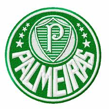

Times que Disputaram a Libertadores 2012
- Corinthians
- Palmeiras 
- Santos
- Boca Junior
- Fortaleza
- São Paulo
- Vasco
- Flamengo


Semifinal
- Corinthians X Palmeiras
- Santos X Boca Junior
- Fortaleza X São Paulo
- Vasco X Flamengo
Final
- Corinthians X Boca Junior